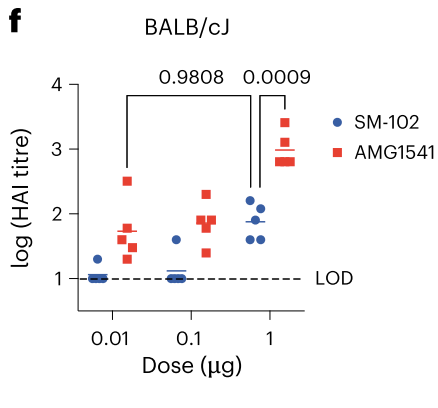

Imagine a world with more effective vaccines accessible to all. Scientists at MIT have created an mRNA vaccine system that, compared with an already approved vaccine platform, caused a stronger immune response with a much smaller dose and stayed in the body for less time, potentially reducing side effects.
Instead of using a live or weakened virus, mRNA vaccines inject genetic code encapsulated in an immune-activating particle into muscle. This teaches cells to make proteins that trigger an immune response to a specific virus. Researchers are now developing technologies that could reduce vaccine dosage while improving effectiveness, which could increase distribution, lower costs, and possibly reduce side effects.
The MIT scientists wanted to improve how mRNA is transported into muscle cells and expressed after injection. They focused on lipid nanoparticles, or LNPs: tiny fatty spheres that carry the mRNA. LNPs contain ionizable lipids, which help maximize mRNA expression with smaller doses.
LNPs have a neutral pH until they enter a cell. Then their pH decreases, allowing the mRNA to leave the LNP and activate the cell's ribosomes. The ribosomes translate the mRNA into harmless proteins similar to those found on the surface of viruses. These proteins act like viral tags, teaching the immune system what to recognize in the future.
To identify the best LNP, scientists built a library of chemicals that could be combined like building blocks to create a diverse set of ionizable lipids for testing. From this library, they identified a novel ionizable lipid called AMG1541 as the best candidate for improving mRNA vaccines.
Further testing compared immune responses produced by AMG1541 with SM-102, an ionizable lipid used in Spikevax, Moderna's FDA-approved COVID vaccine. Because the mRNA encoded the same influenza surface protein in both groups, differences in immune response could be traced to the LNPs rather than the antigen.
The scientists tested female and male BALB/cJ mice separately because females in this strain are known to have stronger immune responses to vaccination. Mice vaccinated with AMG1541 produced higher total antibody levels than mice vaccinated with SM-102, suggesting that the new lipid helped generate a stronger immune response.

Neutralizing antibodies are more representative of vaccine protection than total antibodies. The researchers measured them using the hemagglutination inhibition, or HAI, assay. A higher HAI titre suggests better protection against infection.
The data showed that AMG1541 was about as effective at generating neutralizing antibodies as SM-102, but at one hundredth of the standard dose. The response to 1 microgram of SM-102 was similar to the response to 0.01 micrograms of AMG1541. This matters because lower doses could significantly lower vaccine costs if the findings translate to humans.
This study represents a breakthrough in vaccine research through the discovery of a more effective LNP for mRNA vaccines. The technology could lower dosage and cost while improving efficacy and minimizing side effects because less vaccine material would be needed in the body.
Still, important questions remain. More antibodies often suggest stronger protection, but a high antibody titre does not automatically guarantee functional immunity in humans. The study's results now give other scientists a promising path to test AMG1541 in mRNA vaccines and investigate real clinical outcomes. The next time you get a vaccine, research like this could help make it more affordable, more effective, and easier on your body.
Works Cited
Rudra, A., Gupta, A., Reed, K., Deik, A., Min, J., Mansour, H. M. A., Nguyen, Q. T. C., Danko, A., Hu, Y., Berger, A., Prado, M., Beck, A., Clish, C. B., Klauda, J. B., Langer, R., & Anderson, D. G. (2025). Degradable cyclic amino alcohol ionizable lipids as vectors for potent influenza mRNA vaccines. Nature Nanotechnology. https://www.nature.com/articles/s41565-025-02044-6
Trafton, A. (2025, November 7). Particles that enhance mRNA delivery could reduce vaccine dosage and costs. MIT News. Massachusetts Institute of Technology. https://news.mit.edu/2025/particles-enhance-mrna-delivery-could-reduce-vaccine-dosage-costs-1107
U.S. Food and Drug Administration. (2025). Spikevax package insert: Summary basis for regulatory action. https://www.fda.gov/media/155675/download